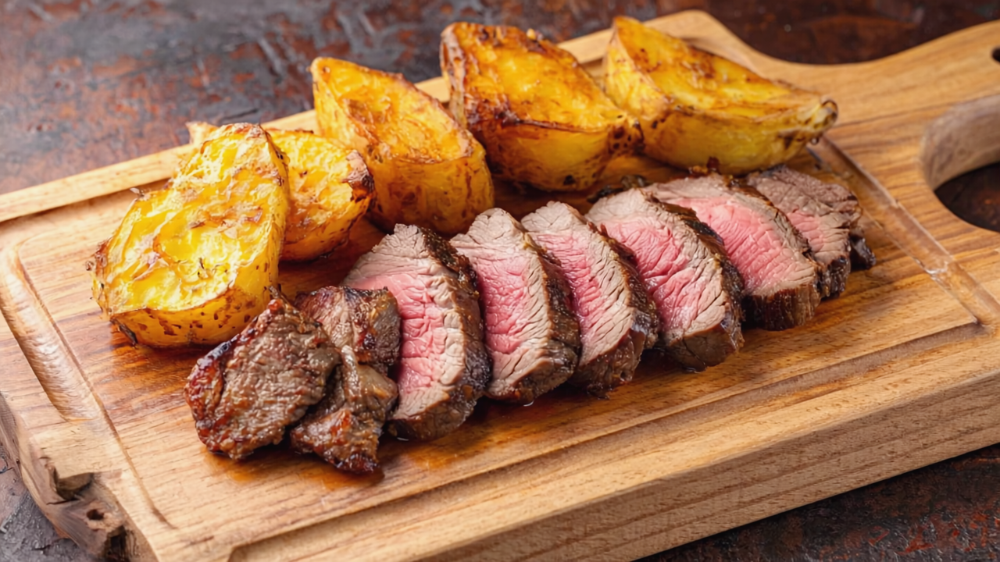

Home
CASSAVA

DESCRIPTION
This dish features perfectly medium-rare roasted beef, sliced to showcase its juicy pink center with a well-seasoned, caramelized crust on the exterior. The beef is accompanied by golden-brown fried cassava pieces that have a crispy exterior and soft interior, similar to thick-cut potato wedges but with cassava's distinctive starchy texture. Both components are arranged on a rustic wooden serving board with a juice groove, highlighting the contrast between the tender meat and the crispy cassava. The warm lighting accentuates the rich colors of the dish - the golden-yellow of the cassava and the gradient of brown to pink in the beef slices. This simple yet satisfying plate combines the hearty flavors of roasted meat with the comforting starchiness of fried cassava.
INGREDIENTS
- Beef cut (likely ribeye, sirloin, or tenderloin)
- Salt and black pepper
- Olive oil or vegetable oil
- Garlic (fresh or powder)
- Herbs (likely rosemary, thyme, or oregano)
- Butter (for basting)
- Fresh cassava root (peeled and cut into chunks)
- Vegetable oil (for frying)
- Salt
- Optional seasonings (paprika, garlic powder, or herbs)
STEPS
- Remove beef from refrigerator 30-60 minutes before cooking to reach room temperature
- Pat dry with paper towels
- Season generously with salt, pepper, and desired herbs/spices
- Heat oil in an oven-safe skillet over high heat until smoking
- Sear beef on all sides until deeply browned (2-3 minutes per side)
- Add butter and herbs to the pan and baste the meat
- Transfer skillet to preheated oven
- Roast until desired doneness (for medium-rare: internal temperature of 135°F/57°C, about 15-20 minutes depending on size)
- Remove from oven and let rest for 10-15 minutes before slicing
- Slice against the grain into medium-thick pieces
- Peel cassava and remove the woody core
- Cut into large chunks or wedges
- Place in cold water and bring to a boil
- Parboil for 10-15 minutes until slightly tender but still firm
- Drain well and pat dry
- Heat oil in a deep fryer or heavy pot to 350°F (175°C)
- Carefully add cassava pieces in batches (don't overcrowd)
- Fry until golden brown and crispy (5-7 minutes)
- Remove with a slotted spoon and drain on paper towels
- Season immediately with salt and any desired spices